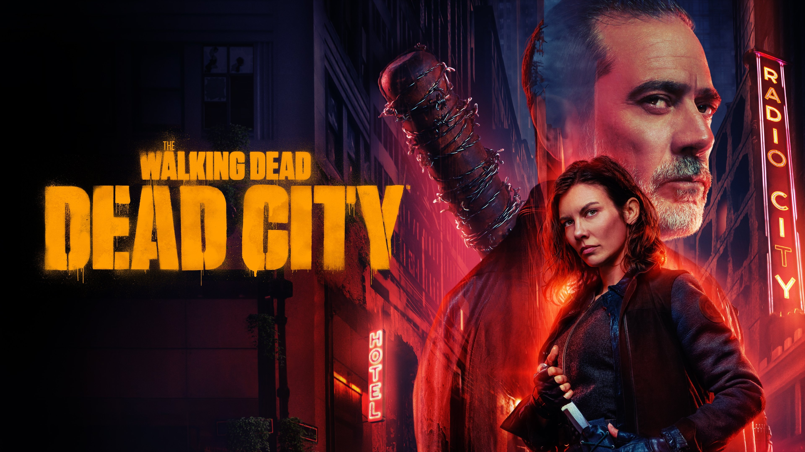

The Walking Dead: Dead City

Sinopse
Spin-off da franquia The Walking Dead, focado nos personagens Megan e Negan, explorando um universo pós-apocalíptico cheio de drama, ação e conflitos emocionantes enquanto eles enfrentam desafios na cidade devastada.
Elenco Principal
- Laurie Holden como Megan
- Jeffrey Dean Morgan como Negan
- Scott M. Gimple (Criador)
Informações Técnicas
- Gênero: Drama, Apocalipse Zumbi, Ação
- Temporadas: 2 (2023)
- Estreia: 2023
- Classificação Indicativa: 16 anos
Curiosidades
- Explora a relação complexa entre Megan e Negan dentro do universo The Walking Dead.
- Recebeu críticas mistas, mas é apreciada pelos fãs do universo zumbi.
- Aborda temas de redenção, sobrevivência e moralidade em um mundo devastado.
Recepção da Crítica
The Walking Dead: Dead City estreou em 15 de junho de 2024, trazendo uma abordagem mais sombria e focada na complexa relação entre Megan e Negan. A série recebeu críticas moderadas, com elogios pela atuação de Jeffrey Dean Morgan e pela construção do suspense em um cenário urbano devastado.
No Rotten Tomatoes, a primeira temporada alcançou cerca de 71% de aprovação pela crítica e 51% do público, destacando que a produção traz novidades ao universo TWD, mas peca em ritmo para alguns espectadores (fonte).
No Metacritic, a série tem um Metascore em torno de 65/100, com críticas apontando que, embora seja sólida, poderia explorar melhor as dinâmicas dos personagens (fonte).
Destaques e Temas
- Foco nos personagens: Explora a relação ambígua entre Megan, uma personagem nova e enigmática, e Negan, trazendo profundidade emocional ao legado da franquia.
- Ambiente urbano: Cenários pós-apocalípticos de Nova York e arredores, com muita tensão, sobrevivência e confrontos entre grupos rivais.
- Temas centrais: Redenção, moralidade questionável, e a luta interna dos personagens para manter sua humanidade.
- Atuações: Destaque para Jeffrey Dean Morgan, que equilibra ação e vulnerabilidade, e Laurie Holden, que traz mistério ao papel de Megan.